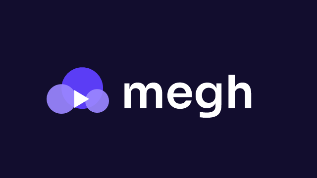

Privacy policy
Last updated 16 November 2026
Megh is a TV app that plays videos and shows photos from your Google Drive. It has no servers of its own: everything happens on your TV, between the app and Google.
What Megh accesses
- Your Google account's email address, to tell your linked accounts apart on the TV.
- Your Google Drive, read-only, using Google's
drive.readonlypermission. Megh reads file names, folders, sizes, thumbnails and the videos and photos themselves, so it can build your library and play it. Other kinds of files are ignored.
Megh can't change, upload or delete anything in your Drive.
How signing in works
You sign in with Google on Megh's sign-in page, on your phone or computer. Google gives that page a one-time code, which the page encrypts so that only your TV can read it, and leaves on a public message relay (ntfy.sh) for your TV to collect. The relay never sees the code itself, your sign-in, your files or anything else about you. Your TV then completes the sign-in directly with Google.
Where your data goes
- Your videos and photos stream straight from Google to your TV. They are never sent to us or anyone else.
- Your sign-in is kept on the TV, encrypted with a key that never leaves the device, and is not backed up to the cloud.
- The TV keeps a list of your files and small thumbnails so the app opens quickly. This stays on the TV.
- Megh has no analytics, advertising or tracking, and doesn't collect crash reports.
- We don't sell, share or transfer your data. We never receive it in the first place.
Google API Services
Megh's use and transfer of information received from Google APIs will adhere to the Google API Services User Data Policy, including the Limited Use requirements.
Removing your data
- In Megh, go to Settings, choose the account and remove it. This deletes it from the TV and asks Google to cancel Megh's access.
- You can also cancel access at any time at myaccount.google.com/permissions.
- Uninstalling Megh deletes everything it stored on the TV.
Children
Megh isn't directed at children under 13 and doesn't knowingly collect their data.
Changes
If this policy changes, the new version will be posted here with a new date.
Contact
Questions: iam.harsha013@gmail.com